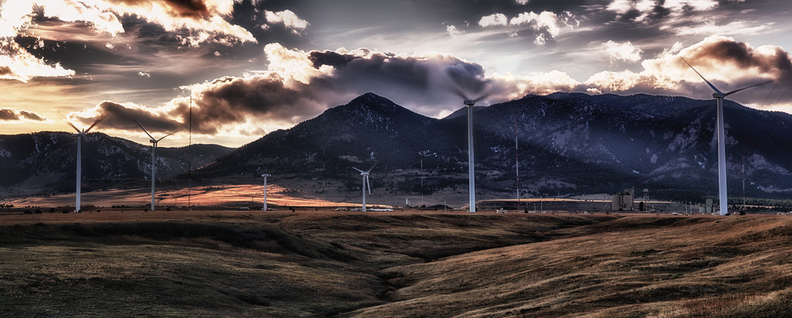
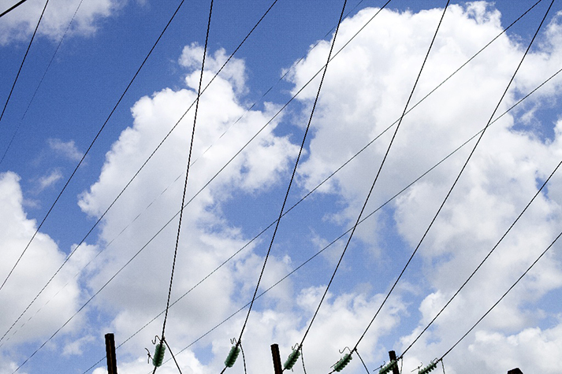

Production
Production totale : 527 TWh
Rejets de CO2 selon la filière de production (pour les filières polluantes)
0.98 t/MWh 0.96 t/MWh 0.46 t/MWhConsommation
Consommation totale : 447 TWh
Consommation
- Agriculture et industrie agroalimentaire
- Energies et combustibles minéraux solides
- Chimie et parachimie
- Construction automobile
- Métallurgie et mécanique
- Minéraux et matériaux
- Papier, carton
- Sidérurgie
- Autres industries
- Transports et télécommunications
- Tertiaire
- Particuliers
- Autres professionnels
Transport
33 907 lignes électriques de transport
de pertes sur le transport
Chargement en cours
Imports / Exports

Echanges commerciaux aux frontières
Ces échanges commerciaux résultent d'accords commerciaux concernant la vente et l'achat d'électricité aux pays frontaliers à la France.
Imports - Exports
Nucléaire
19 Centrales Nucléaires
de la production totale
58 Réacteurs
383 TWh
Durée de vie de 40 ans
L'énergie nucléaire dépend d'un combustible fissile, l'uranium, dont le minerai est contenu dans le sous-sol de la Terre.
Elle permet de produire de l'électricité, dans les centrales nucléaires, appelées centrales électronucléaires,
grâce à la chaleur dégagée par la fission d'atomes d'uranium.
Hydroélectrique
534 Centrales Hydroélectriques
de la production totale
Plus grand débit : 4600 m³/s
64 TWh
76% de l'énergie renouvelable produite dans le monde
L'hydroélectricité est l'une des principales énergies produites et consommées dans le monde.
Parmi les énergies renouvelables, l'hydraulique occupe la 1ère place.
Gaz
11 Centrales au Gaz
de la production totale
50% d'émissions en - par rapport au charbon
35 TWh
70% du mix énergétique dans le monde
Flexibles et d’un impact réduit sur l'environnement, les centrales à cycles combinés au gaz naturel (CCG)
permettent d'améliorer le rendement énergétique tout en réduisant les émissions atmosphériques.
Eolien
359 Parcs Eoliens
de la production totale
2343 éoliennes
20 TWh
Hauteur moyenne : 160 mètres
Avec la loi relative à la transition énergétique pour la croissance verte, promulguée le 18 août 2015,
la France s’est fixée pour objectif d’atteindre 32% d’énergie renouvelable dans la consommation totale d’énergie de la France à horizon 2030.
Les parcs éoliens terrestre sont construits sur des sites choisis en fonction de la qualité des vents tout en respectant un ensemble de conditions dont : une distance minimale de 500 m des habitations, une distance minimale de 5 km des radars de l’aviation civile et météo tout en respectant les paysages.
Les parcs éoliens terrestre sont construits sur des sites choisis en fonction de la qualité des vents tout en respectant un ensemble de conditions dont : une distance minimale de 500 m des habitations, une distance minimale de 5 km des radars de l’aviation civile et météo tout en respectant les paysages.
Bio-Energie
Centrales aux Bio-Energies (Biomasse verte)
de la production totale
Premier prototype en mars 2017
8 TWh
La plupars du temps mixte en co-combustion (vert + gaz)
L'énergie issue de la biomasse est une source d'énergie renouvelable qui dépend du cycle de la matière vivante végétale et animale.
Solaire

23 Parcs Solaires
de la production totale
Installation = Panneau solaire + ondulateur + compteur
8 TWh
1m² ≈ 150 Wc de puissance
L'énergie solaire est une source d'énergie qui dépend du soleil.
Cette énergie permet de fabriquer de l'électricité à partir de panneaux photovoltaïques ou des centrales solaires thermiques,
grâce à la lumière du soleil captée par des panneaux solaires.
Charbon
2 Centrales au Charbon
de la production totale
Meilleur rendement : 62%
7 TWh
Centrale supercritique = min. 565°C + 250 bars
Dans les centrales au charbon à haut rendement,
l’eau est soumise à une température et une pression telles qu’elle passe directement d’un état fluide à gazeux :
les gains d’efficacité de cette opération permettent de réduire les besoins en combustible, et donc,
les rejets dans l’atmosphère de CO2 liés à la combustion du charbon. Plus la température et la pression augmentent,
plus le gain en termes d’efficacité est important, de même que la réduction de l’impact environnemental.